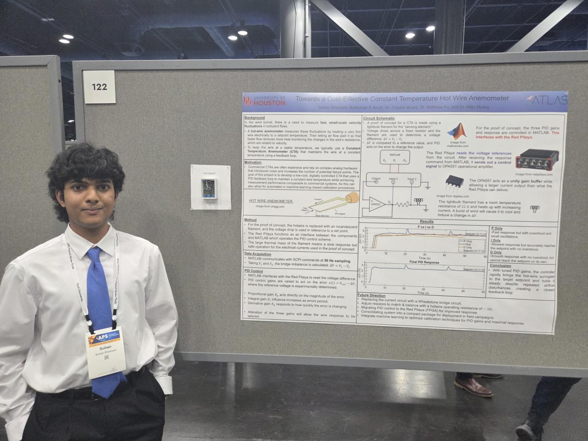
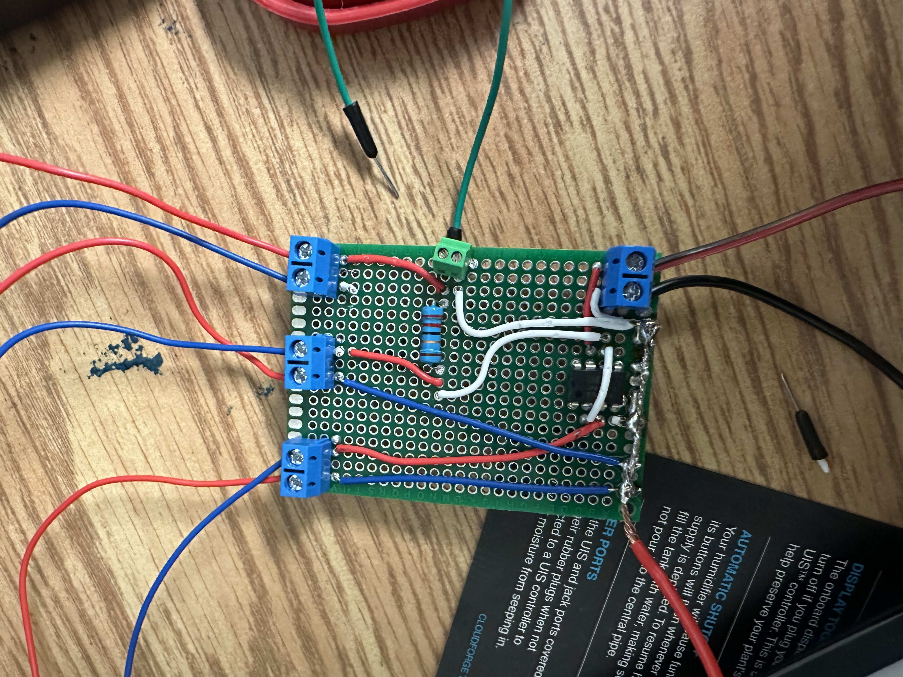
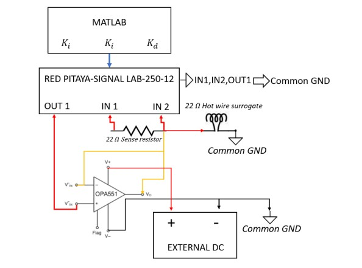
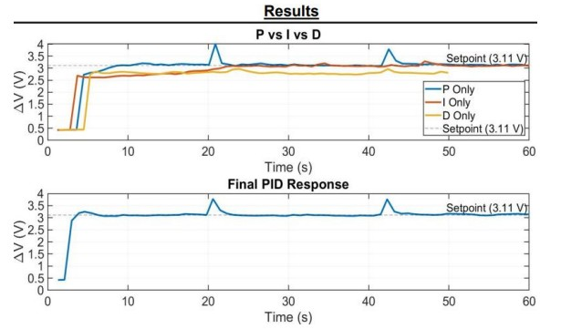
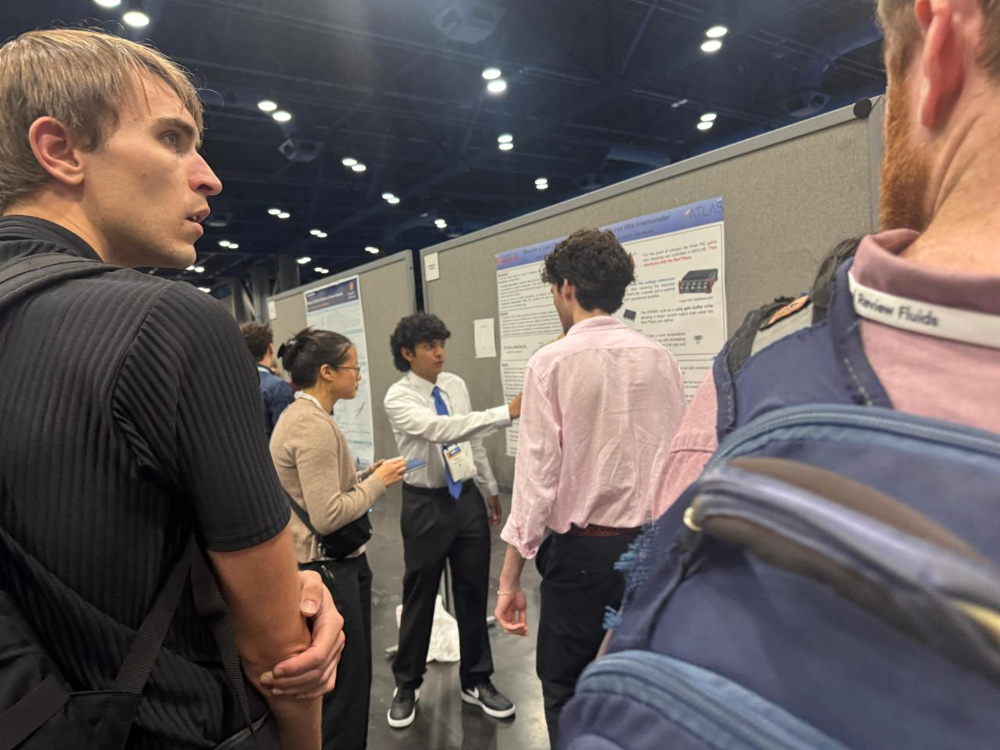
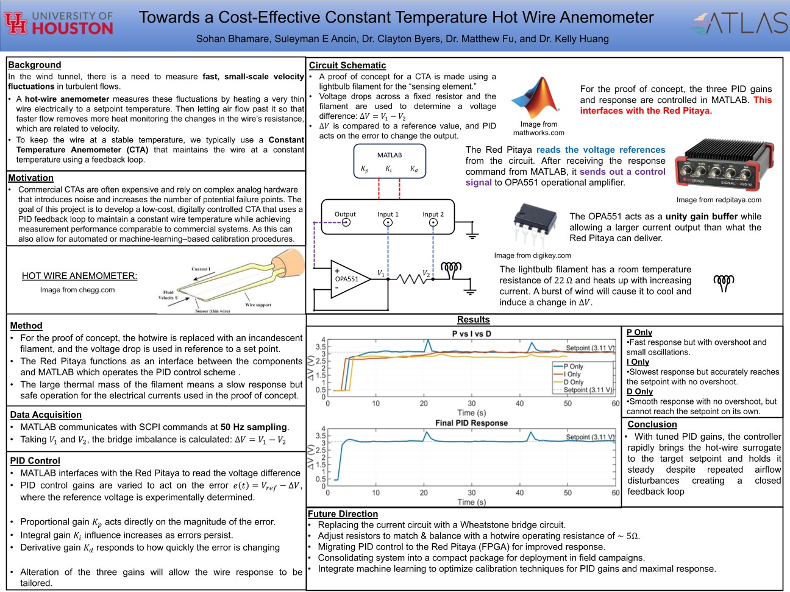

UNIVERSITY OF HOUSTON • WIND TUNNEL RESEARCH LAB
Constant Temperature Anemometer
Development of a low-cost digitally controlled hot-wire anemometer using MATLAB, PID feedback, Red Pitaya data acquisition, and custom electronics.

OVERVIEW
Digital Control for Hot-Wire Measurements
Hot-wire anemometers measure rapid velocity fluctuations by heating a thin sensing wire. As airflow removes heat, the wire's electrical resistance changes.
At the University of Houston Wind Tunnel Research Lab, our goal was to develop a lower-cost Constant Temperature Anemometer using digital PID feedback instead of relying entirely on complex analog control hardware.
MY ROLE
Research & Development
I worked on circuit development, MATLAB programming, PID control, real-time data acquisition, experimental testing, and documentation of the system.
PROJECT DETAILS
Building the Digital Feedback System
The system used a Red Pitaya Signal Lab 250-12, an OPA551 amplifier, a 22 Ω sense resistor, an external DC supply, and MATLAB.
For proof-of-concept testing, an incandescent lightbulb filament was used as a surrogate hot wire. Applying airflow cooled the filament and changed its electrical response, allowing the controller to detect the disturbance and drive the system back toward its desired operating point.

DIGITAL FEEDBACK & PID CONTROL
MATLAB → Red Pitaya → Amplifier → Hot Wire
The Red Pitaya measured the sense-resistor and filament voltages while MATLAB communicated with the system through TCP/IP using SCPI commands at 50 Hz.
MATLAB calculated the controller error relative to the target setpoint and used proportional, integral, and derivative control to determine the required output.
Proportional
Provides fast response to the current error.
Integral
Reduces accumulated steady-state error.
Derivative
Adds damping and smooths rapid changes.

TESTING & RESULTS
Maintaining the Setpoint
Airflow disturbances caused the surrogate hot wire to cool and move away from its 3.11 V setpoint. The PID controller responded by adjusting its output and returning the system toward the desired operating condition.

RESEARCH PRESENTATION
Presenting the Research

